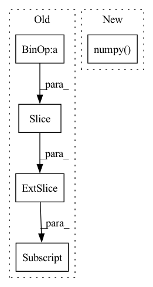

Pattern ID :30412

Before Change
_, latent = model.extract_latent(input)
print(latent.size())
real = latent[:,:n_bases//2,:]
imag = latent[:,n_bases//2:,:]
power = real**2+imag**2
plt.figure()
plt.pcolormesh(power[0], cmap="bwr")
After Change
power = torch.abs(latent)
plt.figure()
plt.pcolormesh(power[0].detach().cpu().numpy(), cmap="bwr")
plt.colorbar()
plt.savefig("data/tasnet/power.png", bbox_inches="tight")
plt.close()
In pattern: SUPERPATTERN
Frequency: 3
Non-data size: 5
Instances
Fragment ID: 89956236
Project Name: tky823/dnn-based_source_separation
Commit Name: 3ca1f1e5986cebb7df022f46f176de179d4cdbb6
Time: 2021-09-23
Author: 40362510+tky823@users.noreply.github.com
File Name: src/models/tasnet.py
M Class Name: AnonimousClass
N Class Name: AnonimousClass
M Method Name: _test_tasnet_base(0)
N Method Name: _test_tasnet_base(0)
M Parent Class:
N Parent Class:
M File Name: src/models/tasnet.py
N File Name: src/models/tasnet.py
M Start Line: 507
M End Line: 540
N Start Line: 319
N End Line: 338
'>
Before Change
return last_idxs
if self.complete_windows:
sample_condition = ts_windows_flatten[:, self.t_cols.index("sample_mask"), -(self.output_size):]
sample_condition = (sample_condition > 0) * 1 // Converts continuous sample_mask (with weights) to 0-1
sample_condition = t.sum(sample_condition, axis=1)
sample_condition = (sample_condition == self.output_size) * 1
After Change
sample_condition = t.sum(sample_condition, axis=1)
sample_condition = (sample_condition > 0) * 1
sampling_idx = t.nonzero(sample_condition > 0)
sampling_idx = sampling_idx.flatten().numpy()
return sampling_idx
// Cell
'>
Fragment ID: 89956237
Project Name: nixtla/neuralforecast
Commit Name: d7e8b63f4eaf0c2bd8f38cc7fd6a9d9e117cf16d
Time: 2021-12-22
Author: fede.garza.ramirez@gmail.com
File Name: nixtlats/data/tsdataset.py
M Class Name: AnonimousClass
N Class Name: AnonimousClass
M Method Name: _get_sampleable_windows_idxs(3)
N Method Name: _get_sampleable_windows_idxs(3)
M Parent Class:
N Parent Class:
M File Name: nixtlats/data/tsdataset.py
N File Name: nixtlats/data/tsdataset.py
M Start Line: 624
M End Line: 647
N Start Line: 647
N End Line: 661
'>
Before Change
def decode(self, encoded):
f0 = encoded[:, 0].copy().astype(np.double)
mcep = encoded[:, 1:2 + self.mcep_dim].copy().astype(np.double)
codeap = encoded[:, 2 + self.mcep_dim:].copy().astype(np.double)
ap = pyworld.decode_aperiodicity(codeap, self.sample_rate, self.n_fft)
spc = pysptk.mc2sp(mcep, self.mcep_alpha, self.n_fft)
After Change
def decode(self, f0, logspc, codeap):
f0 = f0.numpy().astype(np.double)
logspc = logspc.numpy().astype(np.double)
codeap = codeap.numpy().astype(np.double)
spc = np.maximum(np.exp(logspc) - self.log_offset, 0)
ap = pyworld.decode_aperiodicity(codeap, self.sample_rate, self.n_fft)
waveform = pyworld.synthesize(f0, spc, ap, self.sample_rate, frame_period=self.frame_period)
'>
Fragment ID: 89956239
Project Name: kaiidams/voice100
Commit Name: 7296e57a68de9d8cf350fc37f9af38d85453bd3b
Time: 2021-06-19
Author: katsuya.iida@gmail.com
File Name: voice100/vocoder.py
M Class Name: WORLDVocoder
N Class Name: WORLDVocoder
M Method Name: decode(4)
N Method Name: decode(2)
M Parent Class: nn.Module
N Parent Class: Vocoder
M File Name: voice100/vocoder.py
N File Name: voice100/vocoder.py
M Start Line: 47
M End Line: 52
N Start Line: 39
N End Line: 43